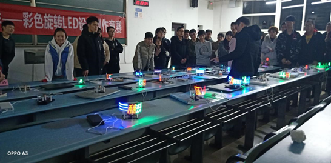
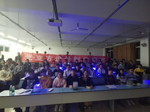
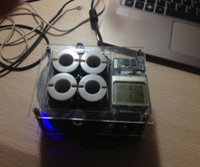

- 彩色旋转LED设计制作竞赛
- 微信小程序设计赛
- 四轴飞行器比赛
- 电脑鼠综合组竞赛
- 光立方竞赛
- 甲类智能车竞赛
- 乙类智能车竞赛
- ACM程序设计大赛
- VR/AR设计竞赛
- 磁悬浮设计制作竞赛
旋转LED是由直流电机的高速旋转，带动了若干个LED发光二极管，由单片机芯片控制LED的亮灭，利用人眼的视觉暂留原理，从而在空中形成各种文字和图案。该竞赛由竞赛秘书处设计、规范标准硬软件技术平台，竞赛过程包括理论设计、电路设计、软件设计、艺术设计、实际制作和正式比赛等环节。该竞赛要求学生组成竞赛团队，协同工作。

本次大赛的参赛作品应为具有适用场景和对应功能的原创性微信小程序，期望参赛队伍以微信小程序的开发技术为基础，结合实际应用需求进行创新设计与开发。参赛作品主题可在微信小程序支持的服务范围和所在类目之内自由命题，但必须遵循微信小程序设计指南、开发标准和《微信小程序平台运营规范》，并且能够在微信平台上运行正常（含开发版本或线上版本），本次大赛不开放游戏和匿名社交类目。
本届“飞行器设计制作”竞赛飞行器的类型不限，多轴飞行器、直升机、固定翼飞行器等，自主飞行或遥控飞行，均可报名参赛。该竞赛由竞赛秘书处设计、硬软件技术平台不限，竞赛过程包括理论设计、电路设计、软件设计，实际制作和调试、现场比赛表演等环节，要求学生组成团队，协同工作，初步体会一个工程性的研究开发项目从设计到实现的全过程。
“电脑鼠”，英文名MicroMouse，是使用嵌入式微控制器、传感器和机电运动部件构成的一种智能行走装置（微型机器人），电脑鼠可以在不同“迷宫”中自动记忆和选择路径，采用相应的算法，快速地达到所设定的目的地。1977年IEEE Spectrum杂志提出电脑鼠的概念：电脑鼠是一个小型的由微处理器控制的机器人车辆，在复杂迷宫中具有译码和导航的功能。

“光立方设计制作”，该竞赛由竞赛秘书处设计、规范标准硬软件技术平台，竞赛过程包括理论设计、电路设计、软件设计，艺术设计、实际制作和调试、现场比赛等环节，要求学生组成团队，协同工作，初步体会一个工程性的研究开发项目从设计到实现的全过程。该竞赛融科学性、趣味性和观赏性为一体。

全国大学生“恩智浦”杯智能汽车竞赛是受教育部高教司委托，由教育部高等自动化专业教学指导分委员会主办的竞赛。该竞赛以“立足培养，重在参与，鼓励探索，追求卓越”为指导思想，是以智能汽车为竞赛平台的多学科专业交叉的创意性科技竞赛，是面向全国大学生的一种具有探索性的工程实践活动，旨在促进高等学校素质教育，培养大学生的综合知识运用能力、基本工程实践能力和创新意识。

“智能车”，该竞赛由竞赛秘书处设计、规范标准硬软件技术平台，竞赛过程包括理论设计、实际制作、整车调试、现场比赛等环节，要求学生组成团队，协同工作，初步体会一个工程性的研究开发项目从设计到实现的全过程。该竞赛融科学性、趣味性和观赏性为一体，是以迅猛发展、前景广阔的汽车电子为背景，涵盖自动控制、模式识别、传感技术、电子、电气、计算机、机械与汽车等多学科专业的创意性比赛。
西南交通大学ACM校内程序设计大赛是我校为提高同学们对程序设计的兴趣和衡量我校本科大学生编程水平而设置的一项重要赛事，迄今已成功举办九届。该赛事在激发大学生程序设计兴趣，发现程序设计人才方面起到了重要作用。该赛事每年举办一次，分为网上预赛和现场决赛两个阶段。我校每年都从校内程序设计比赛中选拔优秀的选手组织参加每年一届的ACM 国际大学生程序设计竞赛（2017年是第40届）。

VR/AR设计竞赛从认知与体验出发，设计VR/AR形式呈现的模块或软件。软件开发平台工具不限，包括Unity3D，UnrealEngine，VisualStudio等，软件最终运行平台不限，可以为移动端或桌面端。竞赛过程分为软件设计，实际制作调试，效果现场展示等环节，学生组队参赛，协同完成。
“磁悬浮设计制作竞赛”，该竞赛由竞赛秘书处设计、规范标准硬软件技术平台，竞赛过程包括理论设计、电路设计、软件设计，艺术设计、实际制作和调试、现场比赛等环节。比赛内容：将四组线圈固定在座子上并通电，由线圈产生磁场，将磁浮子推举起来，并动态平衡于空中，可将座子放在水平面和斜面上，在10分钟内，谁稳定的时间越长，谁获胜。若稳定时间相同，则从工艺、外观、晃动程度予以评判。
